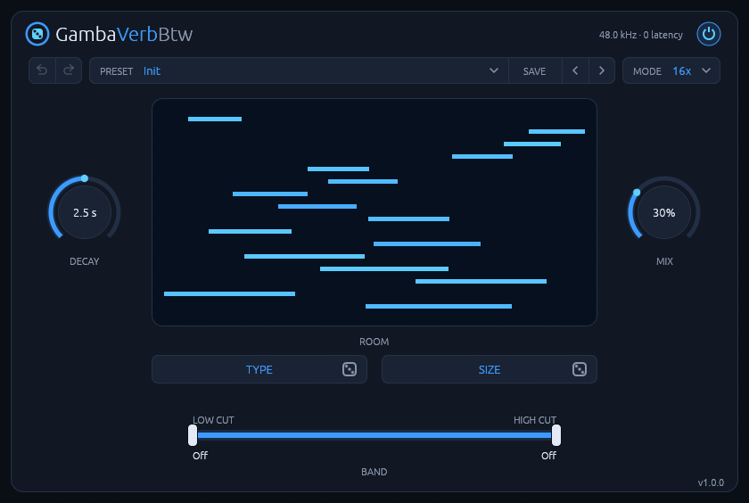
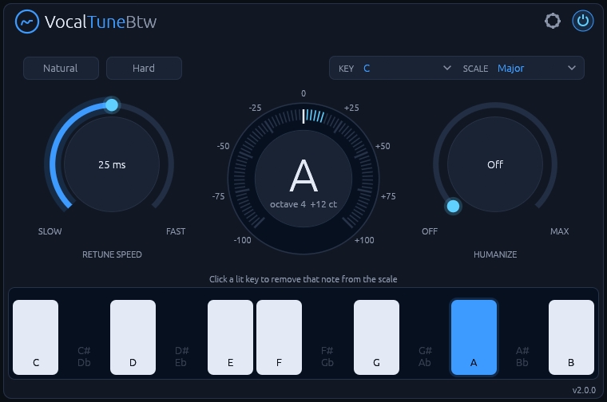
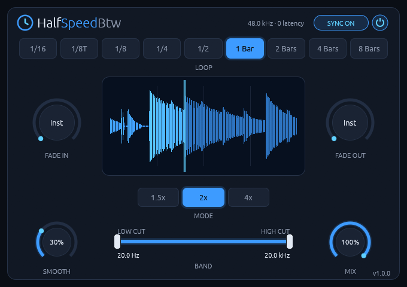
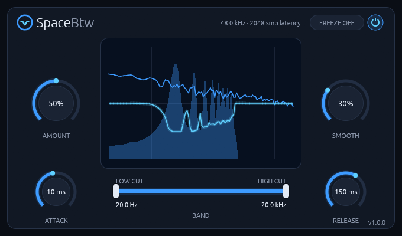
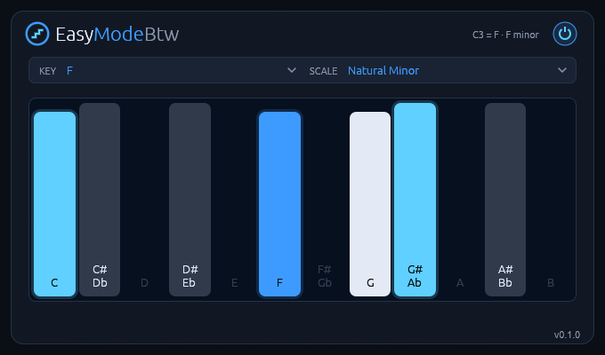

Audio plugins for Linux
CLAP and VST3, free to download. Each one comes with a manual.
-

GambaVerbBtwv1.1.2 A room reverb for Linux whose rooms come from two short codes. -

VocalTuneBtwv2.0.4 Real-time pitch correction for monophonic vocals, built natively for Linux. -
 SoftClipBtwv0.1.4
A soft clipper for Linux with 2x to 16x oversampling, AUTO GAIN and a live scope.
SoftClipBtwv0.1.4
A soft clipper for Linux with 2x to 16x oversampling, AUTO GAIN and a live scope.
-

HalfSpeedBtwv1.1.5 A tempo-synced half-speed loop effect for Linux, with zero added latency. -

SpaceBtwv1.0.5 A sidechain spectral ducker for Linux: it turns a track down only at the frequencies the sidechain signal is using right now. -

EasyModeBtwv0.1.4 Play any scale on the white keys. A MIDI effect for Linux: the white keys play the notes of the scale you pick, the black keys are silent, and the scale's root sits on middle C.